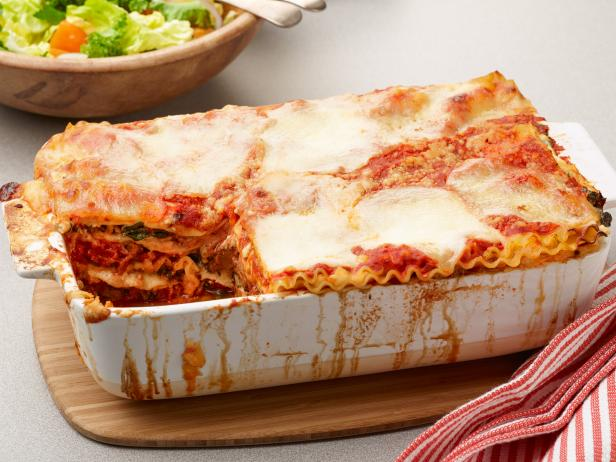

Famous 7 Layer Lasagna

7 Layer Lasagna is a delicious and hearty Italian dish that features layers of lasagna noodles, meaty sauce, creamy ricotta cheese, and melted mozzarella cheese. This classic comfort food is perfect for feeding a crowd or for a cozy family dinner.
Here's a recipe for 7 Layer Lasagna that serves 6-8 people:
Ingredients:
- 1 lb ground beef
- 1 jar spaghetti sauce
- 1 can diced tomatoes, undrained
- 1 teaspoon dried basil
- 1 teaspoon dried oregano
- 1/2 teaspoon garlic powder
- 1/2 teaspoon salt
- 1/4 teaspoon pepper
- 1 package lasagna noodles
- 1 container ricotta cheese
- 2 cups shredded mozzorella cheese
- 1/2 cup grated Parmesan cheese
Instructions:
- Preheat oven to 375 degrees.
- Brown ground beef in a large skillet over medium heat. Dry any excess fat.
- Stir in spaghetti suace, diced tomatoes, basil, oregano, garlic powder, salt, and pepper. Simmer for 10 minutes, stirring occasionally.
- Cook lasagna noodles according to package directionns. Drain and rinse with cold water
- Spread a thin layer of meat sauce in the bottom of a 9x13 inch baking dish. Arrange a single layer of lasagna noodles over the sauce.
- Spread a layer of ricotta cheese over the noodles, followed by a layer of meat sauce and a layer of shredded mozzarella cheese. Repeat layers until all ingredients are used up, ending with a layer of meat sauce.
- Sprinkle Parmesan cheese over the top of the lasagna.
- Cover the baking dish with foil and bake for 25 minutes.
- Remove the foil and bake for an additional 25 minutes, or until the cheese is melted and bubbly.
- Let the lasagna cool for 10 minutes before slicing and serving. Enjoy!